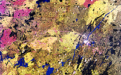
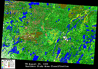
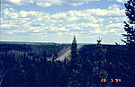
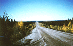

The Northern Study Area (NSA) is 100 km wide x 80 km around Thompson, Manitoba, about 780 km from the Southern Study Area. It is quite typical of the extreme northern boreal forest. It is gentle in terrain, contains few lakes and is covered primarily with black spruce, scattered birch and some stands of jack pine. Stand ages are variable, up to 80 years old. Trees are smaller in stature than in the SSA. There is very little aspen, occurring only in very small patches. The NSA is accessible by an all-weather gravel road (Highway 391) connecting Thompson and Nelson House. Several gravel pit roads and winter access trails to a power line to the south of Highway 391 provide additional access. Thompson itself is a mining town of roughly 15,000 in population.


The BOREAS Northern Study Area (NSA). Click on a site (red letters) to visit that sites page.
The Northern Study Area has five main sites along Highway 391 to the west of Thompson, and several auxillary sites. They are:
|  Satellite image of the NSA (Landsat TM July 25, 1990) |
 Land Cover Classifcation image of the NSA (August 20, 1988) |
|  The NSA landscape and Highway 391 (looking east), taken from the NSA-UBS tower | |
|  Route 280 | Typical vehicle |
The Northern Study Area (NSA) is 100 km wide x 80 km around Thompson, Manitoba, about 780 km northeast of the Southern Study Area. The coordinates of the NSA are listed in the table below, in Latitude-Longitude and UTM (Northing-Easting).
| NAD83 Coordinates | NAD27 Coordinates | ||||
| Corner | Longitude | Latitude | Easting | Northing | Zone |
|---|---|---|---|---|---|
| NW | -98.82 | 56.247 | 510,884 | 6,233,565 | 14 |
| NE | -97.24 | 56.081 | 609,930 | 6,216,458 | 14 |
| SE | -97.49 | 55.377 | 595,766 | 6,137,770 | 14 |
| SW | -99.05 | 55.54 | 497,150 | 6,154,889 | 14 |
The following chart provides an example time conversion for standard and daylight savings time periods for 1993 to 1996 from local times at the NSA to GMT.
| Dates For Daylight Savings Time |
|---|
| April 4 - October 31, 1993 April 2 - October 30, 1994 April 3 - October 31, 1995 April 7 - October 27, 1996 |
| GMT | US East Coast | Manitoba | Saskatchewan | |
|---|---|---|---|---|
| Standard Time | 1300 | 0800 | 0700 | 0700 |
| Daylight Savings | 1300 | 0900 | 0800 | 0700 |
In a nutshell:
Ecological Setting: The NSA is close to the northern limit of the closed-crown boreal forest. Situated on low-relief terrain and with soils predominantly derived from Glacial Lake Agassiz sediments, the area represents a northern version of the black spruce, jack pine and aspen forests that characterize the low relief plains in the south. Evidence of its nordicity is:
Vegetation: The predominant species is black spruce which occurs in stands of varying density. It occurs in bogs, drier lichen covered sites and occasional rock outcrops. There are some jack pine stands mainly in the south and west parts of the study area. The kame deposits have closed to open stands of mainly pure jack pine with other species occurring on patches of clay or beach deposits. Forest stands are generally mature with some being over 100 years old. Heights vary from stunted black spruce in bogs areas to stands as tall as 15m. White birch and trembling aspen are scattered within some of the coniferous stands; pure stands are rare and small. Forest cover is broken by varying density, moisture conditions and especially open treed bogs. Stands and uniform patches are small. No logging has occurred in the study area.
Fire History: A large 1981 burn is in the southern part of the area and a large 1964 burn with predominantly jack pine regeneration is situated near the eastern boundary. Large 1989 burns occur in the western and northern sections of the study area. There were significant fires during the 1994 BOREAS field campaigns. The effects of this will not be visible until newer satellite images are acquired.
Physiography: The NSA site lies within the Canadian Shield Province. In northwestern Manitoba it has a gently rolling surface with numerous small lakes.
Surficial Geology: Most of the region is composed of clay deposited by glacial Lake Agassiz. In low areas, the surficial deposits are mostly varved clays. The deposits are thin or absent in the higher areas. Also in the low lying areas bogs and fens exist. Permafrost can often be found a few feet below the surface of bogs. Permafrost can also occur at greater depths in clay soils on thickly wooded slopes and some ridges. Two major hills composed of sand and gravel (kame deposits) run in a north-south direction with relief up to 60m.
Bedrock Geology: The underlying bedrock consists of Pre-Cambrian gneissic granite which has been glacially polished.
Landforms: The terrain is flat and broadly rolling in low regions and hilly in the high areas. The two kame deposits are an exception and may have local relief up to 60m. The upper portions were reworked by the shoreline of Lake Agassiz and exhibit ancient strand lines.
Soils: The soils are predominantly derived from Glacial Lake Agassiz sediments and consist of clays, organics and some sandy deposits. Soil depths vary from bare rock outcrops on the top of hills to deep sedimentation basins in the low areas up to 17m thick. Within the NSA boundary are two kame deposits forming ridges running approximately N-S. They consist of sandy gravelly deposits that were reworked by Lake Agassiz wave action and exhibit ancient shore lines along the top of the hills. There are occasional outcrops of bedrock. Variations in moisture regimes occur due to topography or soil changes. There are some areas of discontinuous permafrost.
Topography: The topography reflects the glacially smoothed Pre-Cambrian bedrock surface which has been only minimally modified by glacial drift. Terrain is of low relief (mostly less than 15m). It is gentler in the north. Several narrow stream valleys have a relief of 25m. There are some outcrop knolls. Two kame deposits are within the site with local relief up to 60m.
Hydrology: Being flat and having abundant wetland areas, the drainage of much of the area is poor. There are several significant streams that flow into the Sapochi and Odei Rivers and the few lakes within the area are small. There are some large lakes (2x15 km) to the north and northwest of the area. Bog and fen occur on most of the low-lying terrain. Permafrost occurs a few feet below the surface of the bogs. It also occurs at a greater depth under thickly wooded slopes of some clay mantled ridges.
Related Pages:
 BOREAS Home
BOREAS Home
 Study Region Overview
Study Region Overview
 Northern Study Area (NSA)
Northern Study Area (NSA)
 Southern Study Area (SSA)
Southern Study Area (SSA)
Revison Date: January 25, 1999
{kind=link}
{kind=link}
{kind=link}
{kind=link}
{kind=link}